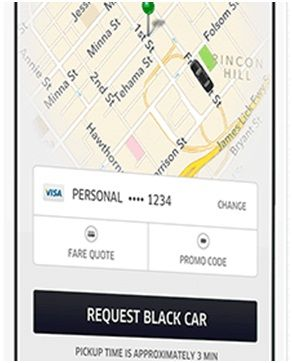
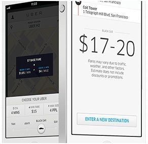
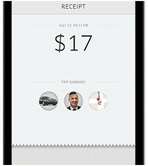
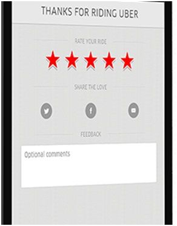
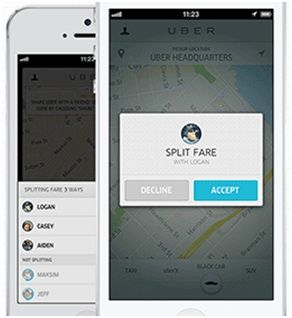
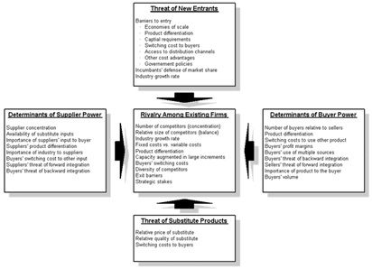
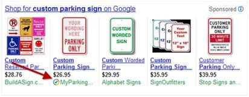
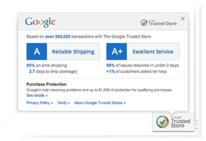

Answers
You’re Larry Page. The head of corporate development tells you that Quora is in play, and both Microsoft and Facebook are bidding for it. Should Google participate in the discussions? Why?
CANDIDATE: Yes. There are three reasons why Google should participate in the acquisition discussions.
Comments: Candidate does a good job articulating the benefits of a Quora acquisition. He keenly identifies the risk of not having Quora content available. But there are some areas of improvement. Quora is not an acceptable acquisition at any price. The candidate should at least acknowledge pricing as a key issue, if not propose a back of the envelope calculation on what is a reasonable acquisition price. Also, the candidate neglects to mention the cons of doing the deal. By presenting an imbalanced view, it invites the interviewer to come up with challenger statements on her own, which makes the interviewer feel that the candidate’s argument is less compelling.
You are the CEO of the Yellow Cab taxi service. How do you respond to Uber?
CANDIDATE: I apologize, but I’m never used the Uber service. Can you tell me more about it?
INTERVIEWER: Uber allows users to request, ride, and pay for black car, like a taxi, service using a mobile phone.

The first value proposition is convenience. You can request a car with a single button tap. No more calling the dispatcher and waiting in line.
The second value proposition is reliability. You know that your driver is coming and how far they are from you. No more guessing if the driver is going to show up in 5 minutes, 30 minutes or not at all.

The third value proposition is clear pricing. With a well-defined range, there’s no more guessing whether your cab ride is going to cost $15 or $85.
CANDIDATE: Is Uber cheaper than a Yellow Taxi?
INTERVIEWER: Sometimes it is, and sometimes it isn’t. Low price is not a value proposition that Uber advertises.

The fourth value proposition is cashless transactions. No more “Can you drop me off at the ATM?” to get cash or worry about handing credit card details to the driver.

The fifth value proposition is that feedback matters.

The last value proposition is that it’s very easy to split the fare with other Uber users.
CANDIDATE: Thanks for walking me through the product. If I were to compare my Yellow Cab experiences with Uber, Uber’s most compelling value proposition is reliability. I can’t tell you how many times I’ve called Yellow Cab and it’s either late or never shows up. If I’m trying to catch a flight, not having my ride show up on time or at all, is far from acceptable. And when I call the dispatcher, they’re usually unmotivated, low paid employees. They either make up an estimated time to arrival. They waste valuable time trying to chase down the driver, get the estimated time to arrival, and communicate it back to the customer – while dealing with 1000 other things at the office.
I feel Uber’s reliability and driver monitoring is the main reason why the service is successful. Also there’s no need to recite and confirm starting and ending destinations, which can commonly get garbled over a bad phone connection.
As the Yellow Cab CEO, I would work quickly to solve this reliability and monitoring problem.
INTERVIEWER: Are you sure this is how the Yellow Cab CEO would want to respond? Wouldn’t they much rather sue Uber on the grounds that Uber drivers aren’t properly licensed?
CANDIDATE: As CEO, I would pursue all tools to preserve corporate profits. However, I would have to have a plan B in case the judicial system deems that they are legitimate competitors.
INTERVIEWER: Okay, continue.
CANDIDATE: Just to recap, Uber exploited the smartphone & Google Maps revolution by by passing the taxi dispatcher. By having customers receive communications directly from drivers, Uber increased reliability of their car services.
To respond, we need to improve our reliability by giving real time data on where our drivers are and how soon they will get to the user’s location.
I have a couple of ideas in mind:
Out of these ideas, which one would you pursue?
Given Yellow Cab’s strong brand name, I don’t think partnering is necessary in the long-term. They could partner with Uber in the short-term to get the service going and then in the long-term build their own Uber-like platform in-house. This is similar to the late 90s where Target and Toys R Us utilized Amazon’s eCommerce platform temporarily before in-housing that capability. That choice didn’t weaken Target or Toys R Us eCommerce prospects in the long-term.
And assuming current licensing laws hold, Yellow Cab shouldn’t be concerned about being commoditized. Taxi licensing laws prevent an influx of competition (when enforced, of course). Customers will use whatever app that will provide access to reliable taxis.
Comments: Candidate does a good job understanding two things:
Candidate’s ideas for improving reliability and cutting out the dispatcher are well reasoned.
If you were Google’s CEO, would you be concerned about Microsoft?
CANDIDATE: Aside from competitive strengths and resources, Microsoft is a threat because it controls two of Google’s distribution on-ramps: Internet Explorer and Windows. Internet Explorer is one of the biggest on-ramps to the web, where Google makes money from advertising. Microsoft also controls Windows, which is one of the biggest operating system on-ramps to a browser.
Google must protect itself from being locked out of distribution on ramps. A number of things it should and has done:
Microsoft also competes directly with several Google businesses including search, search and display advertising, and office productivity software and servers. In most of these businesses Microsoft is either first or second with lots of employees and significant financial resources behind each one.
Lastly, Microsoft has an impressive partner and sales ecosystem. Their sales force has relationships with a broad spectrum of IT decision makers. And their partner ecosystem ranges from OEMs, retailers, and IT consulting firms.
Comments: Porter’s five forces is a convenient checklist when thinking about competitive threats. For example, access to distribution channels, size of competition, and Microsoft’s differentiation, in terms of partner and sales ecosystem, are inferred in the candidate’s response.

How does Google make money, and what are the biggest threats?
CANDIDATE: Can I have a moment to think about it?
INTERVIEWER: Sure.
Candidate takes 30 seconds.
CANDIDATE: I did some research on Google’s business model, and they make about $18 billion per year. Most of that comes from online advertising. Only $1 billion comes from sales of other products such as Google Apps.
When I think about Google’s biggest challenges, the first three that come to mind are mobile ads, social networks, and mobile phones.
| Demand Side Issues | Supply Side Issues | |
|---|---|---|
| Mobile Ads | Low monetization | Limited inventory |
| Social Networks | Spare target data | Do not own the leading social network |
| Mobile Phones | Brand | Vertical integration |
The first threat is mobile advertising. Google’s business is changing from a PC to a mobile centric world. Latest industry data from Marin Software shows that mobile impressions grew from 12.5% in 2012 to 24.7% in 2013.
However, the cost per click for a mobile ad is about 15% lower than desktop ads. On the demand side, there are many reasons why mobile advertisements don’t sell as well: low commercial intent, small display, and poor targeting options.
On the supply side, the migration from PC to mobile has impact as well. On the PC, users see ads primarily on websites. On a mobile device, users see ads on both websites and apps. Google does not have advertising relationships with the thousands of new app developers, creating opportunities for competitors to create mobile ad networks.
As a result, Google’s share of the mobile ad impressions is not as dominant as it is on the PC. Google can’t offer the one-stop shop buy-all-your-ads-here value proposition that Google offered in the PC world.
The second threat is social networks. Google+ is the 2nd largest social network after Facebook. However, Google+ does not have as much profile or behavioral data as Facebook. These data gaps could lead to ineffective ads and lower monetization potential.
The other problem is that Google does not own ad inventory on the world’s dominant social network. While Google’s advertisers can participate on the Facebook Ad Exchange, Google are subject to Facebook’s rules, leading to supply risk.
The third threat is mobile phones. Android does have 75% worldwide market share. However, among consumers, Android is perceived as the cheap brand while Apple is perceived as the premium brand. This limits the available profits in the Android ecosystem. In other words, margins are slim.
On the product side, Android has two main problems. Firstly, aside from the Motorola division, Google does build Android phones from start-to-finish. That is, Android software is produced by Google, but the hardware is developed by third party partners such as Samsung and HTC. This additional cross-company coordination leads to products that aren’t as thoughtfully designed as products offered from a single company like Apple.
Secondly, each Android manufacturer has the power to determine how to customize the Android devices for their own handsets. This leads to product fragmentation, which could damage the customer experience and Android’s brand reputation.
Comments: Candidate offered a very thoughtful discussion around Google’s key challenges. The supply and demand side framework was simply effective. It forced the candidate to think through various dimensions of each issue, creating a complete and satisfying response.
How does LinkedIn make money, and what are the biggest threats?
CANDIDATE: I did some research on this last night. Here’s the breakdown if I remember correctly:
LinkedIn Revenue Streams
INTERVIEWER: What are the different divisions?
CANDIDATE: Talent Solutions help organizations find and acquire talent. For example, LinkedIn Recruiter allows recruiters to search, view, and contact every profile that’s usually restricted in the free offering. And Talent Solutions offer project management functionality to add notes and reminders to key candidates for follow-up.
Marketing Solutions includes ads, sponsorships, custom groups and customization of LinkedIn’s InMails. Ads can be targeted based on user’s profile information.
Lastly, Premium Subscriptions offer features to help individuals and businesses to manage their professional identity, grow their business, and connect with talent. This includes features to see profile information for 3rd degree contacts, send InMails to people they’re not connected with, and see stats on who is viewing their profile.
INTERVIEWER: Ok, so what are the biggest threats to LinkedIn?
CANDIDATE: I’ll classify the competitive threats by divisions:
INTERVIEWER: How should LinkedIn respond niche professional networks like GitHub?
CANDIDATE: Give me a moment to collect my thoughts.
Takes a 30 second pause.
CANDIDATE: I’m not a GitHub user, but if I were to imagine the three main needs of the GitHub audience, here’s what I would say:
LinkedIn’s best response is to offer features that address these needs that aren’t currently being addressed by LinkedIn today. For instance:
For each one of these product improvements, the PM team can choose to build, buy, or partner. For example, they could partner with GitHub to easily share their GitHub repositories on LinkedIn.
Comments: The candidate did his homework and researched LinkedIn’s revenue streams. Most candidates would have kept it short and vague such as “advertising and premium subscriptions.” This candidate took a competitor-centric approach to identifying threats. This is different from a customer or market trends we had seen earlier. We see that it works quite well. Candidate distilled the key shortcomings of LinkedIn vs. these niche professional networks for niche audiences. He gives the interviewer confidence that he will have a reasonable plan to approach the problem.
Google launched a new program: Google Trusted Stores. Why is Google Trusted Stores strategically important for the company?
CANDIDATE: Before I jump in, do you mind if I ask some questions about Google Trusted Stores? I’m not familiar with this program.
INTERVIEWER: Sure.
CANDIDATE: What is Google Trusted Stores?
INTERVIEWER: Google Trusted Stores is an e-commerce certification program. It identifies which merchants offer a good shopping experience.
For example, when a Google search user sees an ad, there’s an icon that indicates that it is a Google Trusted Store.

The user can hover over the name and get more information about the program:

As you can see, Google gives this certification to shippers with reliable shipping and excellent service. Google will also offer to be a third-party mediator and offer up to $1,000 protection for your purchase.
CANDIDATE: Okay, give me a moment to collect my thoughts on the topic.
Candidate writes the following:
CANDIDATE: Okay, you’d like me to discuss the strategic value of the Google Trusted Stores concept. Here’s how I would approach it. I’d first explore how this program impacts the Google search user. Then I’d evaluate how this helps our customer, the advertiser. Lastly, I’d want to see how this protects Google from the competition and lastly, how this helps Google’s core business. Is there anything else that you’d like me to cover?
INTERVIEWER: Are you planning to come up with a dollar value for the program?
CANDIDATE: I wasn’t planning to, but I can if you’d like.
INTERVIEWER: That’s not necessary. A qualitative discussion is fine.
CANDIDATE: Okay, let’s start with the user. For the user, the Google Trusted Store badge gives me buying confidence, especially a retailer that doesn’t have a big brand name. It’s similar to a Better Business Bureau (BBB) seal. If I do a transaction, I will likely get the product I was promised, in a timely manner, without excessive hassle.
Given the assurance, I’m more likely to return to Google again to shop. That is, click on ads and complete purchases (i. e. conversions).
Candidate summaries on the whiteboard:
CANDIDATE: For the advertiser, there are several benefits.
Candidate writes on the whiteboard:
CANDIDATE: The Google Trusted Store badge stands out from other ads. For users who are unfamiliar with the badge, they’ll likely click on it out of curiosity. For users who are familiar with the badge, they’ll also likely click on it, but because they know it’s a symbol of quality.
This will give that advertiser a higher share of clicks for that search query. That’s incredibly valuable because it solves a Google advertiser’s number one problem: not enough clicks! Anything they can do to get more sales, as long as it’s ROI positive, they will do it.
Conversions are also likely to go up because the user has fewer qualms about purchasing from a smaller brand merchant. That’s great news for the advertiser. Not only do they like more sales, but also they like that every advertising dollar is likely to drive more sales. In other words, advertising ROI goes up.
This improves Google’s eCommerce shopping experience, when compared to a shopping experience on Amazon or eBay. I’ll tell you how.
Candidate writes on the whiteboard:
The first issue is trust. Users can be wary of clicking ads or buying from Google merchants because they’ve never heard of them or the merchant’s storefront is unprofessional.
The second issue is brand. Google could be perceived as a site where consumers research purchases, but when it comes to purchase, they should go to somewhere where they can shop with confidence, whether it’s a branded big box retailer like Target or Best Buy or an online shopping mall like Amazon marketplace.
If the reputation sticks, then consumers are less likely to click on Google’s ads and complete transactions, which hurt Google’s cost per click business model.
The third issue is advertiser dollars. Advertisers have many options to drive traffic to their website. For example, they can create stores at Amazon marketplace, eBay stores, or Etsy. Or they can advertise at competitive search engines, such as Bing or Yahoo.
If Google’s users don’t click on ads or do without purchasing anything, then advertisers will not be satisfied with their ROI. If their advertising dollars aren’t efficient, they’ll look for other alternatives.
The last thing I wanted to evaluate: how does Google Trusted Stores benefit Google’s long-term strategy? For Google to report shipping satisfaction on its website, the merchant shares shipment and cancellation information with Google.
This information tells Google whether a conversion occurred, helping Google understand the effectiveness of their advertising offerings. This data can be used to develop new Google products, such as advertising based on a pay-per-sale business model or tweak Google’s algorithms on which retargeted products to show to a Google user, based on the propensity to convert, based on the Trusted Store feed.
Comments: Candidate wasn’t familiar with the product, but did an excellent job clarifying what it was before laying out a clear, easy-to-follow framework to assess the program’s value to Google. The response’s depth shows how well the candidate understands Google’s business and the program’s strategic value.
Should Amazon launch a smartphone?
CANDIDATE: I’d like to answer this question by first reviewing our objective, whether it’s revenue, customer satisfaction or loyalty. Then, I’ll talk about the customer pain points, see if this is in-line with Amazon’s strengths, and then review the market trends.
Today’s mobile phone customer has a two-year contract subsidy, and it includes only so many minutes. There’s a slight movement toward prepaid, but not much.
Phone selection is fairly limited. There’s Apple, Google and Nokia, which will soon be Microsoft.
Amazon’s strengths include a large customer base. Last time I heard they’ve got 30 million customers. They’ve got a marketplace full of books, music, and movies that can be digitally loaded onto the device. Also, they have a powerful network of affiliates. But Amazon does have several weaknesses when it comes to selling a phone. First, Amazon has no brick and mortar locations, so customers can’t test their smartphone. Second, Amazon doesn’t have any experience building phones. Third, they’ve got a good eCommerce brand, but it’s not clear that Amazon’s brand can extend into smartphones too.
I feel Amazon can also subsidize the cost of the device by giving offers or showing ads. And if Amazon’s foray into tablets is any indication, the Amazon smartphone is likely to have a decent form factor.
The key market trend is that more people are buying products using their smartphone.
My recommendation is that Amazon should pursue this opportunity. Offer the phones on contract to lower the price of the hardware, and optimize the phone for easy purchase of digital goods via Amazon’s marketplace.
Comments: The answer sounds okay, but it’s very flawed. The candidate completely missed the strategic importance of launching a smartphone, which is to protect Amazon’s physical media revenue (books, music, movies).
Books, music and movies are being sold digitally and consumers are buying them through its competitors: Apple’s iTunes and Google Play.
Candidate attempts to use a framework, but it’s purely mechanical.
Choose a company that you believe provides a world-class customer experience. What do they do well?
CANDIDATE: Home Depot has a world-class customer experience. When I think why, it comes down to three criteria:
I’ll go into more detail. Let’s say I have a home improvement problem, but I don’t know how to solve it. Without knowing what to solve, I don’t know what to buy at Home Depot. Because their staff is very knowledgeable, often staffed with former contractors, they both point you to the product you need and give you tips. For customers who are looking for solutions, it’s a blessing that the staff doesn’t just care about selling products, but solving problems.
The staff typically goes an extra mile to help you out. The other day, I needed to buy a hex wrench to loosen up my sink disposal. The Home Depot clerk and I weren’t too sure of which one I should buy. Rather than have me buy a couple wrenches and return the ones that didn’t work, he said, “Let’s take all these to the sink disposal section and make sure we find a good fit before you checkout.”It required him to open up some packaging to do so. I really appreciated his extra effort.
Lastly, I can always find the home improvement product that I need at Home Depot. I’m always rest assured that my time driving to Home Depot is time well spent.
INTERVIEWER: What’s an example of a company that has a poor customer experience?
CANDIDATE: Give me a moment to think about it.
Candidate takes 10 seconds.
CANDIDATE: I didn’t have to look too far. Lowe’s provides a poor customer experience. And here’s why:
Understaffed. Home improvement purchases are complicated. Customers need help — whether it’s to identify the right product or picking the right product from the top shelf. Lowe’s stores are consistently understaffed that customers, on average, spend 3 to 5 minutes searching for an associate to assist. Compared to Home Depot, where associates are plentiful and can be often found in less than 30 seconds, providing customers with more pleasing experiences.
Lowe’s sales associates are poorly trained. Many of them seem to be new and don’t understand Lowe’s processes. I’ve had two occasions where they did a poor job describing how sales discounts are being applied.
Limited product selection. I’ve had a hard time finding the right products in the store; they don’t seem to have Home Depot’s extensive product selection.
To improve the situation, I would recommend the following be addressed:
Improve sales associate knowledge. Either hiring more skilled clerks or better training programs can accomplish this. A recent MSN Money poll mentioned that knowledgeable staff is what customers say matters most.
Hire more associates. Customers don’t like to waste time. Make it easy for customers to get questions answered. An alternative to hiring associates could include self-service information kiosks, more product pamphlets, better signage and a system to locate and page the nearest sales associate.
Increase product selection. Product selection is key. It can be improved by either carrying more goods in-store, supplement in-store goods with goods that can be purchased online or possibly partner with complementary partners that would give Lowe’s a more complete solution set for customers.
Comments: Aside from the detail, what makes this response believable is that this is the candidate’s own personal experiences. He answers the question with conviction. He presents her criteria for what makes a good response at the beginning. Lastly, he makes some good recommendations on how Lowe’s can improve their customer service.